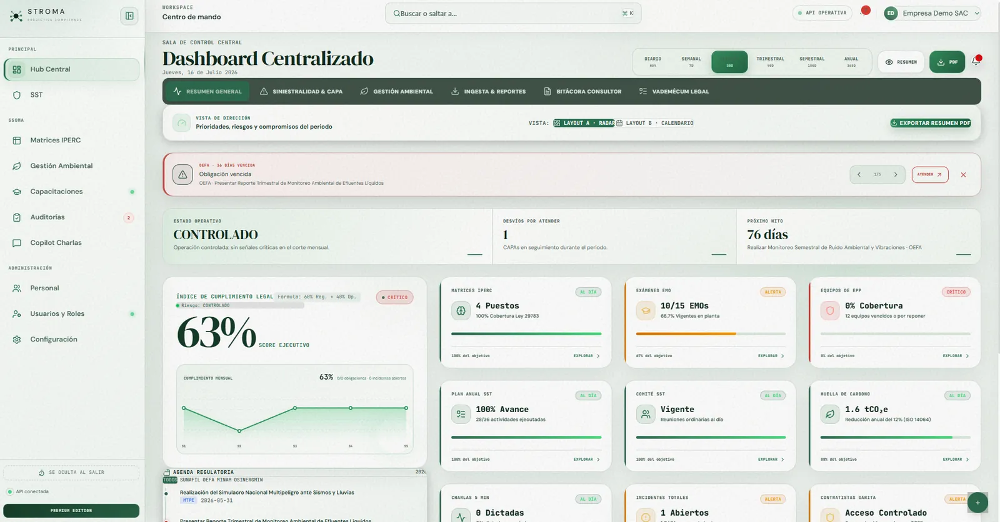
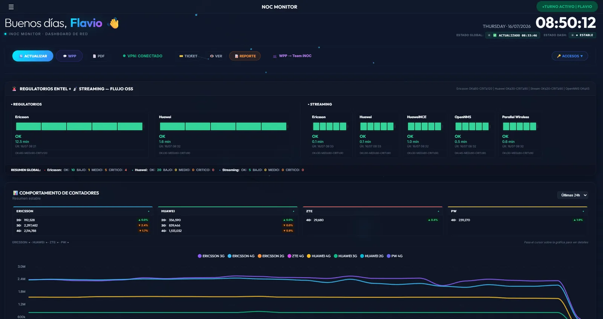

SSOMA y ambienteControles, riesgos y cumplimiento
Bachiller en Ingeniería y Gestión Ambiental · Lima
Flavio Esteban Bravo Oyola
Rigor en la gestión.
Claridad para decidir.
Integro SSOMA, gestión ambiental, operaciones y analítica para transformar obligaciones complejas en procesos trazables, controles útiles y resultados medibles.
Chorrillos, Lima, Perú · +51 924 585 930 · vobrafla@gmail.com · linkedin.com/in/flavio-bravo-o090300 · fulitz.github.io/CV-FlavioB

Automatización40 h/semde carga operativa reducida
Continuidad99.9%de disponibilidad reportada
01 / Perfil
Gestión, operación
y datos en un perfil.
Bachiller en Ingeniería y Gestión Ambiental con experiencia aplicada en SSOMA, procesos, monitoreo crítico y automatización.
Conecto requisitos técnicos y legales con herramientas que el equipo realmente puede usar. He trabajado con matrices IPERC e IAA, inspecciones, capacitación, homologaciones, instrumentos ambientales y control operativo; además desarrollo soluciones con Python, SQL y Power BI para reducir carga manual y mejorar la trazabilidad.
ProcesosOrden, evidencia y mejora continua
DatosAutomatización y visualización
02 / Resultados
Impacto verificable.
de trabajo manual reducido mediante automatización.
de disponibilidad reportada en infraestructura crítica.
cuentas corporativas captadas con propuestas técnicas.
archivos digitalizados y catalogados con trazabilidad.
2023Actualidad
Internet Para Todos (IPT) · Atento
Ingeniero INOC · Automatización y analítica operativa
- Automaticé el 100% de la reportería operativa recurrente con Python, reduciendo aproximadamente 40 horas semanales de carga manual.
- Diseñé tableros Power BI y controles SQL para monitorear incidencias, SLA y matrices operativas.
- Superviso infraestructura crítica y coordino incidentes, contribuyendo a sostener una disponibilidad reportada de 99.9%.
2026Actualidad
STROMA · Proyecto independiente
Fundador y desarrollador de producto
- Diseñé una suite modular para centralizar IPERC, ATS/PETAR, contratistas, capacitación, indicadores y gestión ambiental.
- Implementé un diagnóstico de 23 requisitos críticos y convertí necesidades técnico-legales en flujos y paneles trazables.
20242025
Solugrifos S.A.C.
Gestor comercial · Soporte técnico SIG / SST
- Participé en matrices IPERC e IAA, inspecciones, capacitación, IGA e ITSE.
- Reduje en 30% los tiempos documentales y apoyé propuestas que captaron más de 15 cuentas.
20212023
Museo Jade Rivera
Asesor de operaciones y experiencia del cliente
- Digitalicé y catalogué más de 5,000 archivos y atendí en español e inglés a delegaciones internacionales.
04 / Proyectos
Producto y resultados.
Dos casos que evidencian cómo traduzco necesidades complejas en sistemas claros y utilizables.

STROMA Suite
Plataforma modular para centralizar SST, gestión ambiental, cumplimiento legal, riesgos, capacitación y reportería ejecutiva.
- Arquitectura y experiencia de producto
- Flujos SSOMA con trazabilidad
- Indicadores y alertas operativas

Automatización INOC
Monitoreo y reportería para consolidar información operativa, detectar desviaciones y reducir tareas recurrentes.
- Reportería recurrente automatizada
- Controles operativos y de capacidad
- Seguimiento visual de incidencias
05 / Formación
Base técnica.
Curiosidad constante.
Una formación ambiental reforzada por sistemas de gestión, programación y visualización de información.
Formación académica
2025
Universidad Peruana de Ciencias Aplicadas
Bachiller en Ingeniería y Gestión Ambiental
Tesis Producción de biohidrógeno mediante fermentación oscura a partir de residuos urbanos.
Formación complementaria
- Diagnóstico y Línea Base de SSTCALGESA2024
- Python for EverybodyUniversity of Michigan / Coursera2024
- Power BI Data VisualizationCoursera2024
- Interpretación de SIGISO 9001 · 14001 · 45001Formación
06 / Capacidades
Herramientas con contexto.
No son listas aisladas: son recursos que utilizo para resolver problemas concretos.
SSOMA & SIG
Ley N.° 29783 · IPERC · ATS · PETAR · SCTR · homologación · inspecciones · capacitación · ISO 9001/14001/45001
Gestión ambiental
IGA · DIA · PAD · ITS · PAP · residuos sólidos · aspectos e impactos · OEFA · OSINERGMIN · ITSE
Datos & automatización
Python · Pandas · SQL · Power BI · Power Query · Excel analítico · Apache NiFi · GCP
Operaciones & negocio
SLA · incidentes · mejora de procesos · gestión documental · propuestas técnicas · ventas B2B · coordinación
Idiomas Español nativo · Inglés intermedio (B1–B2)
Adicionales AutoCAD · ArcGIS · Microsoft Office · CRM
07 / Contacto
Conversemos sobre
el siguiente desafío.
Disponible para prácticas profesionales y posiciones de asistencia o análisis junior en SSOMA, ambiente, consultoría, datos u operaciones.